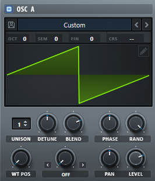

合成器基本结构介绍
本贴用于学习合成器的各个模块，包括振荡器、滤波器等。
前言
本文用到的主要工具是一个开源的宿主软件（DAW）Bespoke Synth。
它最大的特色就是它是模块化的，是一个“可定制的声音游乐场”。
如图：
（穷鬼用不起 Reaktor 只能用它了）
模块讲解
我们就按照 Bespoke 的一些模块来讲。
这里只是简单介绍一下合成器的每种模块，之后每个模块（应该）会有单独帖子来讲解。
输入模块
这个输入模块相当于一个midi键盘了，不过输入模块不只有midi键盘一种。
输出模块
其中的 gain 起到的作用和耳膜类似，就是接收声音信号并将其扩大。底下的数值就是它扩大的倍数。
gain 模块连了条线下来到 splitter 上，这个 splitter 的作用就是将声音分成两个声道。
splitter 又连了两条线下来分别接到 output 1 和 2，这两个就是声音真正的输出了。
振荡器 OSC
准确来说图中的 wave 一列才是振荡器，不过现在大多数振荡器都会整合起一些功能。
振荡器（全称oscillator）是合成器中最重要的部分之一，它的功能就是也只是产生声音。
如图是著名合成器Serum中的OSC：

如果没有其他模块，仅仅输入输出和振荡器连接起来的话，只要给它一个信号振荡器就会一直发出声音，哪怕信号停止输入。
那么为什么音乐中的各种声音都是有始有终的呢？
这就需要下面这些模块了。
音量控制 AMP（或VCA）
这个模块的准确名称叫做“电压控制放大器”，也是合成器的一个必要的模块。
还是这张图：
图中的 volume 一列就是音量控制（准确来说是受包络控制的音量控制模块，下面会讲）。
其功能，顾名思义，就是控制音量，但也仅仅是控制音量，就像这样：
如果只是将OSC接到VCA上，实际上还是不能在信号停止输入时停止声音，他们只能控制产生的声音的音量高低。
包络 ENV
包络全称 Envelope，在整个声音产生模块中无法直观地看出包络是什么。
我们上面说了声音产生模块那张图中的 volume 是受包络控制的音量控制模块，模块上方是一个波形，这个波形就是由包络产生的。
下面是Serum中的ENV模块：
简单来说，包络就是通过产生一个波形来控制其他模块（主要就是音量控制模块），从而达到模块控制的自动化。
通过产生一个波形来控制音量控制模块，音量就能按照波形进行调节：增大或是衰减。
有了以上几种模块后，就能够做出一个最简单最基础的合成器了，只不过产生的声音可能会很单调。
那么如果我们要制作一个减法合成器呢？
接下来就需要滤波器模块了。
滤波器 FLT（或SVF）
滤波器全称Filter（SVF指的是状态变量滤波器 State Variable Filter）。
又是这张图：
其中最右边 filter 一列就是滤波器。
其作用，顾名思义，就是滤去一些频率，从而使声音更加动听。
然后把上边一堆东西按照正确的顺序连接起来，就是一个最简单的减法合成器了。
偷一张B站up主AndreChen的视频截图（文字是我加的）：
低频振荡器 LFO
这个其实是非必要的，之后专门开一个帖子讲好了。
结尾
以上这些模块就是合成器最基础的模块了。
不过这样的声音还是很难听，毕竟只是一个最简单的减法合成器。
可以在这个合成器的基础上加一些效果器之类的。或者也可以多做几个发声模块之类。
总之，以上就是合成器最基础的各个模块，可能会有漏洞或错误，如有发现请发邮件（地址在博客的关于页）给我。
参考：
- B站UP主@AndreChen的教学视频 “【合辑】【合成器基础教学】入门/通用/必备知识——Abletive教学视频站”